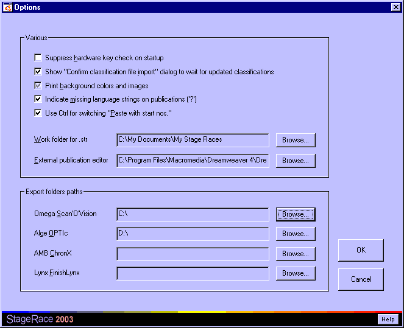

Options
The Options dialog window allows you to
set the preferences of the current user for working with StageRace.

The following options can be set:
- Switch the following functions on and off:
- Suppress hardware
key check on startup
Normally StageRace would inform you
on startup about a missing hardware key, giving you the chance to
supply a key before the software falls back into evaluation mode.
This can be suppressed through this option. - Show
"Confirm classification file import" dialog to wait for
updated classifications
Through this option you can have
StageRace display a
dialog as extra step between choosing a file to import from
and getting the
import preview dialog. This
dialog helps you waiting for the newest version of the file
that you want to import. - Print
background colors and images
This option is copied from
the advanced internet options in the Control Panel. - Indicate
missing language strings on publications ('?')
When StageRace
fails to look up certain strings in the
multilingual database, through this option an indication for
the missing strings can be printed on publications.
- Use
Ctrl for switching "Paste with start nos."
Normally
pressing the Ctrl key on your keyboard while having the
competitors view displayed, would toggle in the
menu. This key-press can be ignored through this option. - Hide
Functions menu for arrival sheets other than stage arrivals
Hide
the Functions menu so that you do not accidentally insert imported
data into e.g. sprint or bonus tab sheets as imported data on average
goes towards the stage arrival.
- Choose the location of your
work folder.
- Choose the executable
file that is to be used as your
external publication editor.
- Choose
the location where to place exported StageRace files for
Omega Scan'O'vision,
Lynx FinishLynx,
Alge OPTIc,
AMB ChronX and
Skunkware TT*Ware.